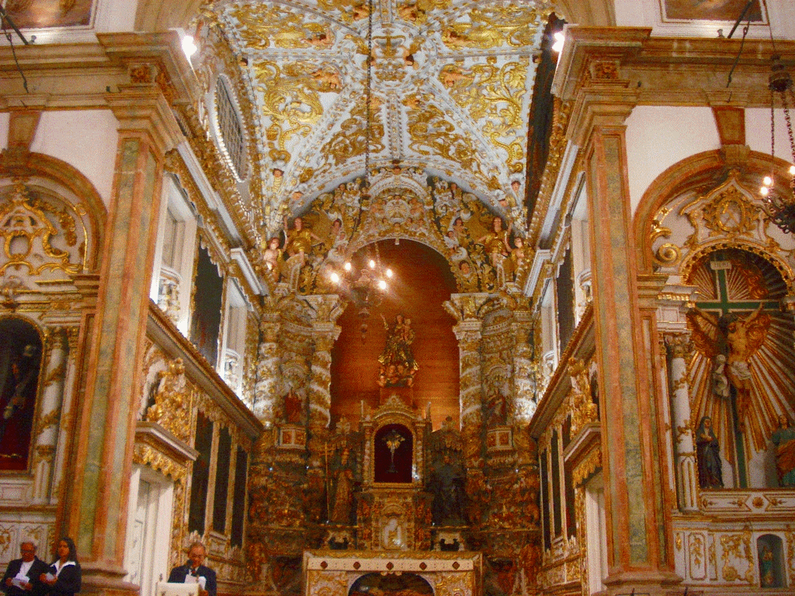

Igreja Madre de Deus
A Igreja Madre de Deus é uma igreja católica histórica que remonta ao século XVIII. Foi construída pelos jesuítas e concluída em 1720. A igreja é um exemplo significativo da arquitetura barroca no Brasil, com uma fachada imponente e um interior ricamente decorado. A Igreja Madre de Deus é um marco importante na história de Recife e é frequentemente visitada por turistas e fiéis.
Paço Alfândega
O Paço Alfândega é um importante centro comercial e cultural localizado no Recife Antigo, em Recife, Pernambuco, Brasil. Aqui estão algumas informações sobre ele:
- Localização e História: O Paço Alfândega está situado às margens do Rio Capibaribe, próximo ao Marco Zero. O edifício onde atualmente funciona o shopping foi originalmente construído no século XVIII como um armazém alfandegário, utilizado para o controle de mercadorias que chegavam ao porto de Recife.
- Transformação em Shopping Center: Ao longo dos anos, o antigo armazém foi restaurado e transformado em um moderno centro comercial, mantendo elementos arquitetônicos históricos, como arcos e estruturas de pedra originais.
- Cultura e Entretenimento: Além das opções comerciais, o Paço Alfândega também promove eventos culturais, exposições artísticas e apresentações musicais, proporcionando um espaço dinâmico para a comunidade local e visitantes.
- Localização Estratégica: Sua localização privilegiada no Recife Antigo o torna uma parada popular para turistas que exploram a região histórica da cidade, permitindo fácil acesso a outras atrações como o Marco Zero, a Igreja Madre de Deus.